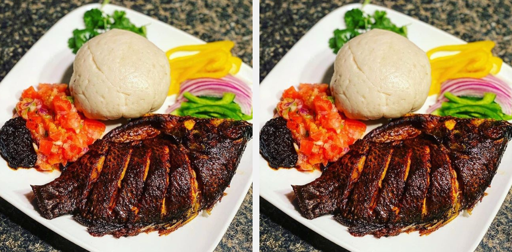

Banku and Tilapia

What is Banku and Tilapia?
Banku and tilapia is a delious meal in Ghana, West frica. Ghanaians eat banku at several occasions
such as naming ceremony, wedding, and parties.
They also eat banku as a regular food in their home.
Banku is made from cassava and corn dough. Tilapia is a fish that Ghanaians use for making making stew and soups.
It can also be grilled, fried, and baked.
Banku and Tilapia Ingredients
- Properly clean tilapia
- Corn dough
- Cassava dough
- Salt
- Pepper
- Tomatoes
- Onion
- Garlic
- Ginger
- Water
How to prepare Banku and Tilapia
- Grind onion, garlic, and ginger.
- Pour the onion mixture on a properly cleaned tilapia. Add salt and rob the onion mixture inside the cavity and into the slashes of the tilapia.
Cover the tilapia and leave the fish to marinate for some time (30 minutes to 1 hour)
- Grill or bake the tilapia for 25-30 minutes until nicely browned and cooked through.
- Mix equal amounts of cassava and corn dough in a pan
- Add water to the mixture and stir till it looks porridge like
- Add salt to the mixture and put it on fire
- Stir the mixture with a wooden ladle
- As mixture begins to thicken, continue to stir till it becomes a thick pulp
- Continue to stir until color of the mixture changes to a light cream color
- This indicates that the banku is ready and it can be molded with a small bowl into balls
- Prepare the pepper sauce by grinding onion, pepper, and tomatoes. Add salt to tast
You can serve the banku and tilapia with Ghanaian sauce like shito, avocado, and vegetables of your choice.